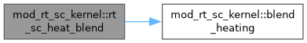
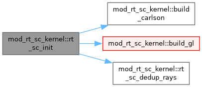

Transport kernel of the short-characteristics (SC) radiative transfer. More...
Functions/Subroutines | |
| pure integer function | ray_sign (a) |
| Sign of a direction cosine as -1, 0 or 1. The zero case occurs, for example for the GL rays at phi = pi/2. | |
| subroutine | rt_sc_init () |
| Build the quadrature into mux, muy, muz and wmu as full 3D cosines, according to rt_sc_quad. | |
| subroutine | rt_sc_dedup_rays () |
| Merge rays that share (mux, muy) and add up their weights. Since the 2D sweep and the moments see only those two cosines, Carlson's +-muz pairs and GL's phi, 2pi-phi pairs sweep the same. The total weight is preserved, so J, Fx and Fy are unchanged to round-off. | |
| subroutine | build_gl () |
| Product Gauss-Legendre set, with nmu polar nodes about rt_sc_polar_axis and ndir azimuths at the midpoints of equal intervals. | |
| subroutine | build_carlson () |
| Carlson A4 level-symmetric set, built from the three cyclic permutations of (mu1, mu2, mu2) with mu1^2 + 2 mu2^2 = 1 in each of the 8 octants, which gives 24 directions of weight 1/24 as in MURaM's carlson3. | |
| subroutine | gauss_legendre_nodes (n, x, w) |
| Gauss-Legendre nodes and weights on [-1,1] for n in {2,4,6,8}. Any other n is moved up to the next supported order. | |
| pure double precision function | blend_heating (chi, jm, bpl, divf, tau) |
| Heating of one cell. The thin imbalance c chi (J - B) is blended with the thick, conservative -div F through w = exp(-rt_sc_blend_k tau), and the taper tau^2/(tau^2 + tau_min^2) removes the heating where the column above is optically thin. | |
| subroutine | rt_sc_heat_blend () |
| Heating q_g, blending the thin imbalance c chi (J - B) with the thick, conservative -div F through w = exp(-rt_sc_blend_k tau), tau measured from the top. Taking -div F at depth avoids the stiff, cancelling J - B there. Needs jm_g, b_g, fx_g, fy_g and chi_g. | |
| subroutine | rt_grid_alloc () |
| Allocate the replicated grid at nxg by nyg, and keep it when its size is unchanged. | |
| subroutine | sc_pad_grid () |
| Pad the replicated grid with one ghost layer for sc_sweep_block, once per band after chi_g and b_g are filled. Beyond the band ends chi and B take the edge rows and the intensity is the band-end inflow, B for a thermal end and zero for an open one. A closed horizontal edge is padded the same way, while a periodic one needs no ghosts of course. | |
| subroutine | sc_sweep_2d (nx, ny) |
| One sweep of the whole replicated grid for direction (nx, ny) into ii_g. The padded grid of sc_pad_grid is swept as a single block, which wraps in x when the domain is periodic. The wrap is not exact: a ray swept column by column reaches the seam before its upwind column holds this ray, so the seam takes a vacuum inflow for it. This is accepted, since the gather is only a comparison path; the KBA solvers wrap with the intensity of the previous solve. | |
| subroutine | ka_coeffs (dtau, ex, psi0, psiu) |
| Textbook Olson-Kunasz weights for linear short characteristics over an optical-depth step dtau. | |
| subroutine | sc_sweep_block (nx, ny, dxb, dyb, xwrap, ixil, ixol, chi, bpl, ii) |
| Sweep of one block for ray (nx, ny), the kernel of the wavefront solvers. The upwind face and corner values sit in the ghost ring that getbc fills. With xwrap the block spans the whole periodic x-domain and wraps iu in place. Otherwise the x-upwind values come from the ghosts, and the block at the periodic seam reads the wrap ghost left by the previous solve. | |
Variables | |
| character(len=16), public | rt_sc_quad = 'GL' |
| The angular quadrature, either 'GL' (Gauss-Legendre polar nodes times equally spaced azimuths) or 'Carlson', the level-symmetric A4 set that MURaM uses. | |
| integer, public | rt_sc_ndir = 6 |
| Azimuthal directions and polar nodes of the GL set, with nmu one of 2, 4, 6 or 8. | |
| integer, public | rt_sc_nmu = 4 |
| integer, public | rt_sc_nray = 0 |
| integer, public | rt_sc_polar_axis = 2 |
| Stratification axis (1 = x, 2 = y), set by the driver before rt_sc_init. The GL set places its polar nodes about this axis, while Carlson is symmetric and does not need it. | |
| double precision, public | rt_sc_blend_k = 10.0d0 |
| Weight of the heating blend, w = exp(-blend_k tau), and the scale of the taper tau^2/(tau^2 + tau_min^2) that switches the SC heating off where the column above is thin. | |
| double precision, public | rt_sc_tau_min = 1.0d-6 |
| logical, public | bc_lo_thermal = .true. |
| Incoming intensity at the lower and upper ends of the current band, thermal (I = B) when set and open (I = 0) otherwise. | |
| logical, public | bc_hi_thermal = .false. |
| logical, public | bc_h_periodic = .true. |
| The horizontal edges wrap when the domain is periodic and otherwise act as inflow boundaries, exactly like the band ends. rt_sc_setup copies these from periodB(hdim). | |
| logical, public | bc_hlo_thermal = .false. |
| logical, public | bc_hhi_thermal = .false. |
| double precision, dimension(:), allocatable, public | mux |
| Direction cosines and weights, normalised so that sum(wmu) = 1. In 2D the out-of-plane muz only lengthens the path of each step through ds. | |
| double precision, dimension(:), allocatable, public | muy |
| double precision, dimension(:), allocatable, public | muz |
| double precision, dimension(:), allocatable, public | wmu |
| double precision, dimension(:,:), allocatable, public | chi_g |
| The replicated single-level grid with chi = kappa rho, B = a T^4, the mean intensity J, the intensity of the ray being swept, the heating, both flux components and tau from the top. | |
| double precision, dimension(:,:), allocatable, public | b_g |
| double precision, dimension(:,:), allocatable, public | jm_g |
| double precision, dimension(:,:), allocatable, public | ii_g |
| double precision, dimension(:,:), allocatable, public | q_g |
| double precision, dimension(:,:), allocatable, public | fx_g |
| double precision, dimension(:,:), allocatable, public | fy_g |
| double precision, dimension(:,:), allocatable, public | tau_g |
| integer, public | nxg = -1 |
| integer, public | nyg = -1 |
| double precision, public | dxg |
| double precision, public | dyg |
| double precision, dimension(:,:), allocatable | chi_p |
| double precision, dimension(:,:), allocatable | b_p |
| double precision, dimension(:,:), allocatable | i_p |
Detailed Description
Transport kernel of the short-characteristics (SC) radiative transfer.
The transfer equation is solved along one ray direction at a time with the linear short characteristics of Olson and Kunasz. Each cell takes the intensity at the upwind point on the face the ray crosses first, interpolated linearly along that face, and integrates across one step with the source taken as linear in optical depth. sc_sweep_block sweeps one block whose ghost ring already holds the upwind values and the inflows, and it is the only sweep in the code. The wavefront solvers call it block by block, and the gather calls it once on the whole replicated band, which sc_pad_grid has padded with the inflows
The module also builds the angular quadrature, Gauss-Legendre or the Carlson A4 set, and in 2D merges the rays that differ only out of the plane. It holds the replicated single-level grid of the gather and forms the heating in blend_heating, which blends c chi (J - B) with -div F. Nothing here communicates, since the drivers fill chi and B beforehand
The gather is the original implementation, kept for comparison and not for production. Every rank holds the whole band, and its periodic seam is not exact (see sc_sweep_2d). Production runs should use KBA, which is far better optimised
Structure: A. quadrature rt_sc_init, rt_sc_dedup_rays, build_gl, build_carlson and gauss_legendre_nodes; B. heating blend_heating, and rt_sc_heat_blend on the replicated grid; C. transport sc_pad_grid and sc_sweep_2d for the replicated grid, ka_coeffs for the weights of one step, and sc_sweep_block
Jack Jenkins (10.2026); More or less finished in v1 state for amrvac4.0
Function/Subroutine Documentation
◆ blend_heating()
| pure double precision function mod_rt_sc_kernel::blend_heating | ( | double precision, intent(in) | chi, |
| double precision, intent(in) | jm, | ||
| double precision, intent(in) | bpl, | ||
| double precision, intent(in) | divf, | ||
| double precision, intent(in) | tau ) |
Heating of one cell. The thin imbalance c chi (J - B) is blended with the thick, conservative -div F through w = exp(-rt_sc_blend_k tau), and the taper tau^2/(tau^2 + tau_min^2) removes the heating where the column above is optically thin.
Definition at line 234 of file mod_rt_sc_kernel.t.
◆ build_carlson()
| subroutine mod_rt_sc_kernel::build_carlson |
Carlson A4 level-symmetric set, built from the three cyclic permutations of (mu1, mu2, mu2) with mu1^2 + 2 mu2^2 = 1 in each of the 8 octants, which gives 24 directions of weight 1/24 as in MURaM's carlson3.
Definition at line 173 of file mod_rt_sc_kernel.t.
◆ build_gl()
| subroutine mod_rt_sc_kernel::build_gl |
Product Gauss-Legendre set, with nmu polar nodes about rt_sc_polar_axis and ndir azimuths at the midpoints of equal intervals.
Definition at line 135 of file mod_rt_sc_kernel.t.
◆ gauss_legendre_nodes()
| subroutine mod_rt_sc_kernel::gauss_legendre_nodes | ( | integer, intent(inout) | n, |
| double precision, dimension(8), intent(out) | x, | ||
| double precision, dimension(8), intent(out) | w ) |
Gauss-Legendre nodes and weights on [-1,1] for n in {2,4,6,8}. Any other n is moved up to the next supported order.
Definition at line 200 of file mod_rt_sc_kernel.t.
◆ ka_coeffs()
| subroutine mod_rt_sc_kernel::ka_coeffs | ( | double precision, intent(in) | dtau, |
| double precision, intent(out) | ex, | ||
| double precision, intent(out) | psi0, | ||
| double precision, intent(out) | psiu ) |
Textbook Olson-Kunasz weights for linear short characteristics over an optical-depth step dtau.
Definition at line 340 of file mod_rt_sc_kernel.t.
◆ ray_sign()
| pure integer function mod_rt_sc_kernel::ray_sign | ( | double precision, intent(in) | a | ) |
Sign of a direction cosine as -1, 0 or 1. The zero case occurs, for example for the GL rays at phi = pi/2.
Definition at line 73 of file mod_rt_sc_kernel.t.
◆ rt_grid_alloc()
| subroutine mod_rt_sc_kernel::rt_grid_alloc |
Allocate the replicated grid at nxg by nyg, and keep it when its size is unchanged.
Definition at line 289 of file mod_rt_sc_kernel.t.
◆ rt_sc_dedup_rays()
| subroutine mod_rt_sc_kernel::rt_sc_dedup_rays |
Merge rays that share (mux, muy) and add up their weights. Since the 2D sweep and the moments see only those two cosines, Carlson's +-muz pairs and GL's phi, 2pi-phi pairs sweep the same. The total weight is preserved, so J, Fx and Fy are unchanged to round-off.
Definition at line 98 of file mod_rt_sc_kernel.t.
◆ rt_sc_heat_blend()
| subroutine mod_rt_sc_kernel::rt_sc_heat_blend |
Heating q_g, blending the thin imbalance c chi (J - B) with the thick, conservative -div F through w = exp(-rt_sc_blend_k tau), tau measured from the top. Taking -div F at depth avoids the stiff, cancelling J - B there. Needs jm_g, b_g, fx_g, fy_g and chi_g.
Definition at line 247 of file mod_rt_sc_kernel.t.

◆ rt_sc_init()
| subroutine mod_rt_sc_kernel::rt_sc_init |
Build the quadrature into mux, muy, muz and wmu as full 3D cosines, according to rt_sc_quad.
Definition at line 79 of file mod_rt_sc_kernel.t.

◆ sc_pad_grid()
| subroutine mod_rt_sc_kernel::sc_pad_grid |
Pad the replicated grid with one ghost layer for sc_sweep_block, once per band after chi_g and b_g are filled. Beyond the band ends chi and B take the edge rows and the intensity is the band-end inflow, B for a thermal end and zero for an open one. A closed horizontal edge is padded the same way, while a periodic one needs no ghosts of course.
Definition at line 302 of file mod_rt_sc_kernel.t.
◆ sc_sweep_2d()
| subroutine mod_rt_sc_kernel::sc_sweep_2d | ( | double precision, intent(in) | nx, |
| double precision, intent(in) | ny ) |
One sweep of the whole replicated grid for direction (nx, ny) into ii_g. The padded grid of sc_pad_grid is swept as a single block, which wraps in x when the domain is periodic. The wrap is not exact: a ray swept column by column reaches the seam before its upwind column holds this ray, so the seam takes a vacuum inflow for it. This is accepted, since the gather is only a comparison path; the KBA solvers wrap with the intensity of the previous solve.
Definition at line 331 of file mod_rt_sc_kernel.t.
◆ sc_sweep_block()
| subroutine mod_rt_sc_kernel::sc_sweep_block | ( | double precision, intent(in) | nx, |
| double precision, intent(in) | ny, | ||
| double precision, intent(in) | dxb, | ||
| double precision, intent(in) | dyb, | ||
| logical, intent(in) | xwrap, | ||
| integer, intent(in) | ixi, | ||
| integer, intent(in) | l, | ||
| integer, intent(in) | ixo, | ||
| l, | |||
| double precision, dimension(ixi^s), intent(in) | chi, | ||
| double precision, dimension(ixi^s), intent(in) | bpl, | ||
| double precision, dimension(ixi^s), intent(inout) | ii ) |
Sweep of one block for ray (nx, ny), the kernel of the wavefront solvers. The upwind face and corner values sit in the ghost ring that getbc fills. With xwrap the block spans the whole periodic x-domain and wraps iu in place. Otherwise the x-upwind values come from the ghosts, and the block at the periodic seam reads the wrap ghost left by the previous solve.
Definition at line 374 of file mod_rt_sc_kernel.t.
Variable Documentation
◆ b_g
| double precision, dimension(:,:), allocatable, public mod_rt_sc_kernel::b_g |
Definition at line 59 of file mod_rt_sc_kernel.t.
◆ b_p
| double precision, dimension(:,:), allocatable mod_rt_sc_kernel::b_p |
Definition at line 67 of file mod_rt_sc_kernel.t.
◆ bc_h_periodic
| logical, public mod_rt_sc_kernel::bc_h_periodic = .true. |
The horizontal edges wrap when the domain is periodic and otherwise act as inflow boundaries, exactly like the band ends. rt_sc_setup copies these from periodB(hdim).
Definition at line 52 of file mod_rt_sc_kernel.t.
◆ bc_hhi_thermal
| logical, public mod_rt_sc_kernel::bc_hhi_thermal = .false. |
Definition at line 53 of file mod_rt_sc_kernel.t.
◆ bc_hi_thermal
| logical, public mod_rt_sc_kernel::bc_hi_thermal = .false. |
Definition at line 49 of file mod_rt_sc_kernel.t.
◆ bc_hlo_thermal
| logical, public mod_rt_sc_kernel::bc_hlo_thermal = .false. |
Definition at line 53 of file mod_rt_sc_kernel.t.
◆ bc_lo_thermal
| logical, public mod_rt_sc_kernel::bc_lo_thermal = .true. |
Incoming intensity at the lower and upper ends of the current band, thermal (I = B) when set and open (I = 0) otherwise.
Definition at line 49 of file mod_rt_sc_kernel.t.
◆ chi_g
| double precision, dimension(:,:), allocatable, public mod_rt_sc_kernel::chi_g |
The replicated single-level grid with chi = kappa rho, B = a T^4, the mean intensity J, the intensity of the ray being swept, the heating, both flux components and tau from the top.
Definition at line 59 of file mod_rt_sc_kernel.t.
◆ chi_p
| double precision, dimension(:,:), allocatable mod_rt_sc_kernel::chi_p |
Definition at line 67 of file mod_rt_sc_kernel.t.
◆ dxg
| double precision, public mod_rt_sc_kernel::dxg |
Definition at line 64 of file mod_rt_sc_kernel.t.
◆ dyg
| double precision, public mod_rt_sc_kernel::dyg |
Definition at line 64 of file mod_rt_sc_kernel.t.
◆ fx_g
| double precision, dimension(:,:), allocatable, public mod_rt_sc_kernel::fx_g |
Definition at line 60 of file mod_rt_sc_kernel.t.
◆ fy_g
| double precision, dimension(:,:), allocatable, public mod_rt_sc_kernel::fy_g |
Definition at line 60 of file mod_rt_sc_kernel.t.
◆ i_p
| double precision, dimension(:,:), allocatable mod_rt_sc_kernel::i_p |
Definition at line 67 of file mod_rt_sc_kernel.t.
◆ ii_g
| double precision, dimension(:,:), allocatable, public mod_rt_sc_kernel::ii_g |
Definition at line 59 of file mod_rt_sc_kernel.t.
◆ jm_g
| double precision, dimension(:,:), allocatable, public mod_rt_sc_kernel::jm_g |
Definition at line 59 of file mod_rt_sc_kernel.t.
◆ mux
| double precision, dimension(:), allocatable, public mod_rt_sc_kernel::mux |
Direction cosines and weights, normalised so that sum(wmu) = 1. In 2D the out-of-plane muz only lengthens the path of each step through ds.
Definition at line 56 of file mod_rt_sc_kernel.t.
◆ muy
| double precision, dimension(:), allocatable, public mod_rt_sc_kernel::muy |
Definition at line 56 of file mod_rt_sc_kernel.t.
◆ muz
| double precision, dimension(:), allocatable, public mod_rt_sc_kernel::muz |
Definition at line 56 of file mod_rt_sc_kernel.t.
◆ nxg
| integer, public mod_rt_sc_kernel::nxg = -1 |
Definition at line 62 of file mod_rt_sc_kernel.t.
◆ nyg
| integer, public mod_rt_sc_kernel::nyg = -1 |
Definition at line 62 of file mod_rt_sc_kernel.t.
◆ q_g
| double precision, dimension(:,:), allocatable, public mod_rt_sc_kernel::q_g |
Definition at line 59 of file mod_rt_sc_kernel.t.
◆ rt_sc_blend_k
| double precision, public mod_rt_sc_kernel::rt_sc_blend_k = 10.0d0 |
Weight of the heating blend, w = exp(-blend_k tau), and the scale of the taper tau^2/(tau^2 + tau_min^2) that switches the SC heating off where the column above is thin.
Definition at line 46 of file mod_rt_sc_kernel.t.
◆ rt_sc_ndir
| integer, public mod_rt_sc_kernel::rt_sc_ndir = 6 |
Azimuthal directions and polar nodes of the GL set, with nmu one of 2, 4, 6 or 8.
Definition at line 38 of file mod_rt_sc_kernel.t.
◆ rt_sc_nmu
| integer, public mod_rt_sc_kernel::rt_sc_nmu = 4 |
Definition at line 39 of file mod_rt_sc_kernel.t.
◆ rt_sc_nray
| integer, public mod_rt_sc_kernel::rt_sc_nray = 0 |
Definition at line 40 of file mod_rt_sc_kernel.t.
◆ rt_sc_polar_axis
| integer, public mod_rt_sc_kernel::rt_sc_polar_axis = 2 |
Stratification axis (1 = x, 2 = y), set by the driver before rt_sc_init. The GL set places its polar nodes about this axis, while Carlson is symmetric and does not need it.
Definition at line 43 of file mod_rt_sc_kernel.t.
◆ rt_sc_quad
| character(len=16), public mod_rt_sc_kernel::rt_sc_quad = 'GL' |
The angular quadrature, either 'GL' (Gauss-Legendre polar nodes times equally spaced azimuths) or 'Carlson', the level-symmetric A4 set that MURaM uses.
Definition at line 36 of file mod_rt_sc_kernel.t.
◆ rt_sc_tau_min
| double precision, public mod_rt_sc_kernel::rt_sc_tau_min = 1.0d-6 |
Definition at line 46 of file mod_rt_sc_kernel.t.
◆ tau_g
| double precision, dimension(:,:), allocatable, public mod_rt_sc_kernel::tau_g |
Definition at line 60 of file mod_rt_sc_kernel.t.
◆ wmu
| double precision, dimension(:), allocatable, public mod_rt_sc_kernel::wmu |
Definition at line 56 of file mod_rt_sc_kernel.t.
Generated by